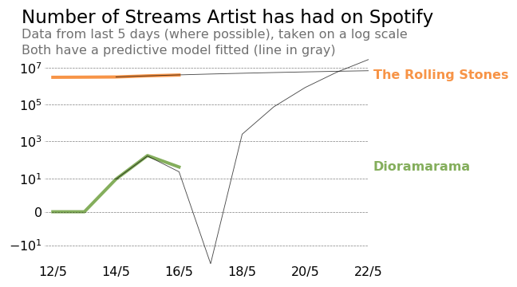

Balthazar III
Me and my flatmate have formed a terrible band who have just released an EP. It consists of 5 covers of famous songs! You can listen here:
https://open.spotify.com/artist/1bua3WCdDECa8Z0OyVkkip?si=VN6Fr0VlQaShn8XVhCATBQ
In it I play the guitar, fiddle and a keyboard. My flatmate plays the bass and theremin. We both sing and try to program drums.
The EP’s tracks are presented in the reverse order in which we recorded them - meaning we recorded track 5 first. As we recorded them we had to learn basically every aspect of music production and performance. Even though the final tracks we recorded aren’t great, they are definitely better than the first ones we tried.
We even made a small diorama of the flat to act as a album cover.

Spotify Artists
When you get a Spotify Artist account you get access to a lot of data about your listening numbers. This includes the gender of your listeners, their location and the source of the stream.

You can even get a small glipse of other artists data. So, if you’re brave about what sorta lines and models you fit you can make things like:

Pretty crazy anyone can put stuff on Spotify.